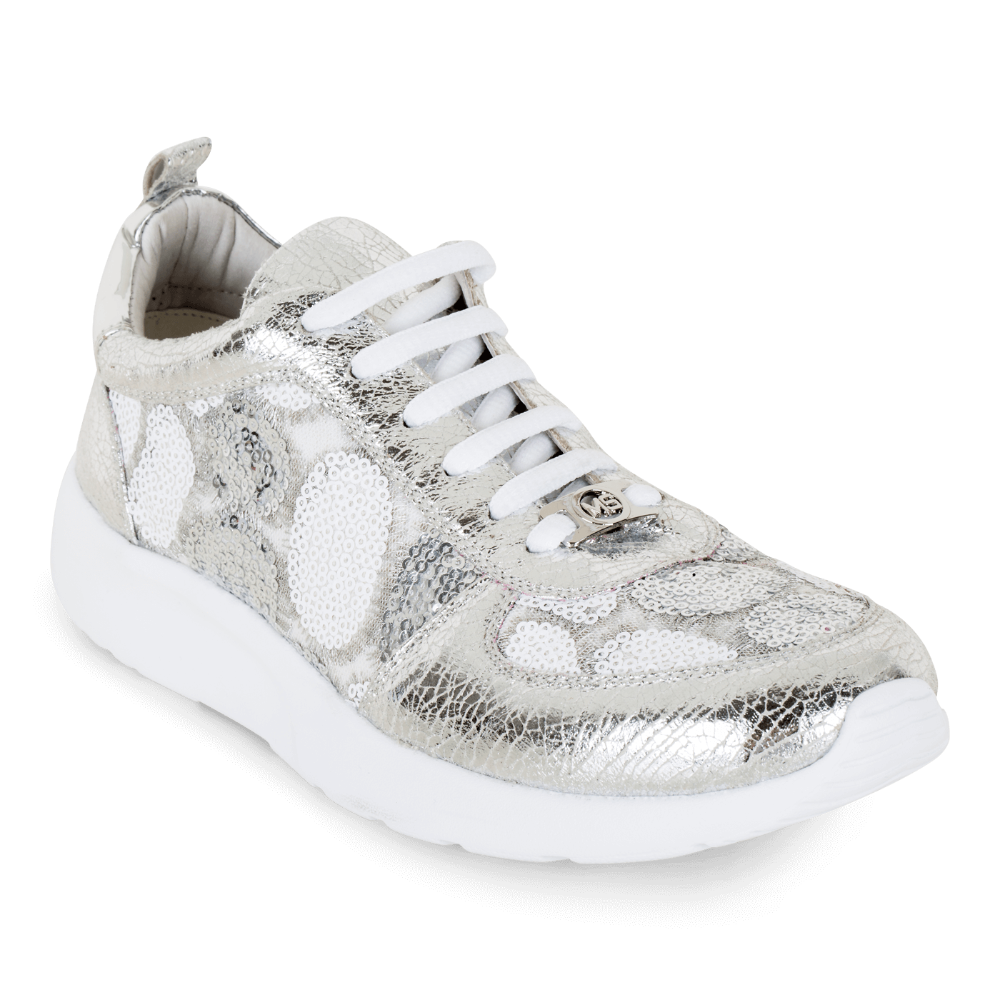

| Balenciaga es una casa de moda fundada en 1917 por el diseñador español Cristóbal Balenciaga en San Sebastián, España. La marca se ha destacado por su enfoque en la calidad, la atención al detalle y la innovación en la moda. |
 Balenciaga Speed $24,000 |
Diseño: Los sneakers Balenciaga Speed presentan un diseño minimalista y sin cordones. Están hechos de una tela elástica de punto que se adapta a la forma del pie, con una suela de goma gruesa. |  Balenciaga Track 2 $27,900 |
Los sneakers Balenciaga Track 2 son una versión actualizada de los populares sneakers Track originales de la marca. Están diseñados para ser zapatillas de trail running con una estética de moda. Los sneakers están fabricados con materiales de alta calidad, incluyendo una combinación de malla transpirable, piel sintética y cuero de ante |
Clear Sole $16,900 |
Los sneakers Clear Sole son un tipo de calzado deportivo que se caracteriza por tener una suela transparente o translúcida, lo que permite que los usuarios puedan ver a través de ella. La suela está hecha de un material resistente y duradero, como el caucho o el TPU (poliuretano termoplástico). |  Speed Trainer $12,300 |
Los sneakers Speed Trainer son un tipo de calzado deportivo diseñado por la marca de lujo francesa Balenciaga. Estos sneakers se caracterizan por su diseño moderno y minimalista, que los convierte en una opción popular tanto para el entrenamiento como para el uso diario. |
|  Tyrex $15,600 |
Los sneakers Balenciaga Tyrex son un modelo de calzado deportivo diseñado por la marca de lujo francesa Balenciaga. Este modelo se caracteriza por su diseño futurista y vanguardista, que lo convierte en una opción popular entre los amantes de la moda y la cultura urbana. |  Track Sneaker Grey blue $22,200 |
Los Balenciaga Track Sneaker en color gris y azul son un modelo de zapatillas deportivas de alta gama diseñadas por la marca de moda francesa Balenciaga. Estas zapatillas son parte de la popular colección de sneakers "Track" de la marca, que se caracterizan por su diseño robusto y técnico.. |
 Track Trainer $15,400 |
Los sneakers Balenciaga Track Trainer son un modelo de calzado deportivo de la marca de lujo francesa Balenciaga. Este modelo se caracteriza por su diseño voluminoso y técnico que combina materiales de alta calidad para proporcionar un calzado resistente, cómodo y elegante.. |  Triple S $11,300 |
Los sneakers Balenciaga Triple S son un calzado deportivo icónico de la marca de lujo francesa Balenciaga, lanzado por primera vez en 2017. Este modelo de sneakers se caracteriza por su aspecto voluminoso y llamativo, con una suela gruesa y una combinación de colores audaces. |
 Varenne Blancos $25,900 |
Los sneakers Balenciaga Varenne Blancos son un calzado deportivo de lujo diseñado por la icónica marca española Balenciaga. Están fabricados en Italia con materiales de alta calidad y cuentan con una suela de goma gruesa y duradera que ofrece una gran tracción y estabilidad. |  Varenne Negros $23,600 |
Los sneakers Balenciaga Varenne Negros son un calzado deportivo de alta gama diseñado por la prestigiosa marca de moda Balenciaga. Estos sneakers presentan un estilo moderno y sofisticado que los hace ideales para usar en diversas ocasiones, tanto casuales como formales. |
 White read Track 1 $14,700 |
Los sneakers Balenciaga Track 1 son una zapatilla deportiva de alta gama con un diseño moderno y futurista. Están hechas con una combinación de materiales de alta calidad, incluyendo malla transpirable, cuero, gamuza y goma. |  Wmns Track Trainer $13,500 |
Los sneakers Balenciaga Wmns Track Trainer son un calzado deportivo de alta gama diseñado por la marca de moda Balenciaga. Este modelo cuenta con un aspecto vanguardista y una silueta robusta que combina múltiples capas de malla y cuero, lo que proporciona una gran durabilidad y soporte para los pies. |